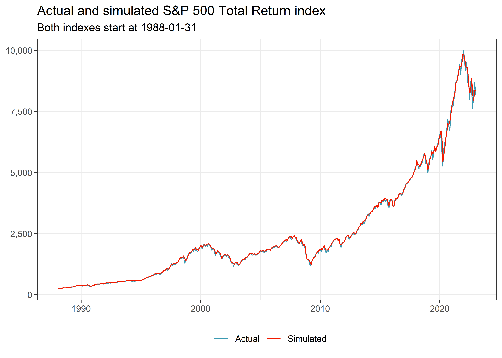
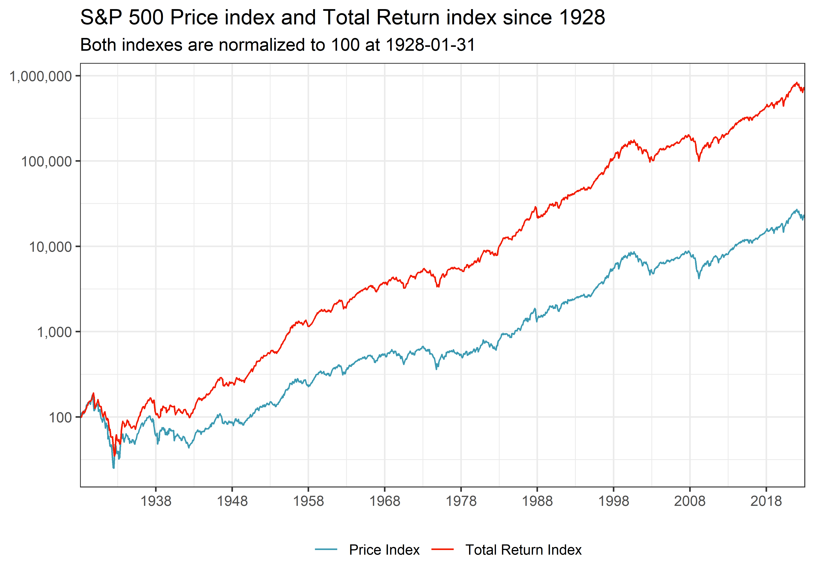

library(tidyverse) # for overall grammar
library(tidyquant) # to download data from yahoo finance
library(glue) # to automatically construct figure captions
library(scales) # for nicer axis labels
library(readxl) # to read Shiller's data I wanted to simulate simple equity savings plans over long time horizons and many different initiation periods for a story with the German news portal t-online. The good thing is that the S&P 500 index provides a great starting point as it is easily available since 1928 via Yahoo Finance. However, I wanted my savings plans to be accumulating, i.e., all cash distributions are reinvested in the savings plan. The S&P index is inadequate for this situation as it is a price index that only tracks its components’ price movements. The S&P 500 Total Return Index tracks the overall performance of the S&P 500 and would be the solution to my problem, but it is only available since 1988.
Fortunately, I came up with a solution using data provided by Robert Shiller and provide the complete code below for future reference. If you spot any errors or have better suggestions, please feel free to create an issue.
This is the set of packages I use throughout this post.
First, let us download the S&P 500 Total Return Index from Yahoo Finance. I only consider the closing prices of the last day of each month because my savings plans only transfer funds once a month. In principle, you could also approximate the daily time series, but I believe it will be noiser because Shiller only provides monthly data.
sp500_recent <- tq_get("^SP500TR", get = "stock.prices",
from = "1988-01-04", to = "2023-01-31") |>
select(date, total_return_index = close) |>
drop_na() |>
group_by(month = ceiling_date(date, "month")-1) |>
arrange(date) |>
filter(date == max(date)) |>
ungroup() |>
select(month, total_return_index)Next, I download data from Robert Shiller’s website that he used in his great book Irrational Excuberance. I create a temporary file and read the relevant sheet. In particular, the data contains monthly S&P 500 price and dividend data. The original file has a bit of annoying date format that I have to correct before parsing.
temp <- tempfile(fileext = ".xls")
download.file(url = "http://www.econ.yale.edu/~shiller/data/ie_data.xls",
destfile = temp, mode='wb')
shiller_historical <- read_excel(temp, sheet = "Data", skip = 7) |>
transmute(month = ceiling_date(ymd(str_replace(str_c(Date, ".01"), "\\.1\\.", "\\.10\\.")), "month")-1,
price = as.numeric(P),
dividend = as.numeric(D)) To construct the total return index, I need a return that includes dividends. In the next code chunk, I compute monthly total returns of the S&P 500 index by incorporating the monthly dividend paid on the index in the corresponding month. Note that Shiller’s data contains the 12-month moving sum of monthly dividends, hence the division by 12. Admittedly, this is a brute force approximation, but I couldn’t come up with a better solution so far.
shiller_historical <- shiller_historical |>
arrange(month) |>
mutate(ret = (price + dividend / 12) / lag(price) - 1)Before I go back in time, let us check whether the total return computed above is able to match the actual total return since 1988. I start with the first total return index number that is available and use the cumulative product of returns from above to construct the check time series.
check <- shiller_historical |>
full_join(sp500_recent, by = "month") |>
filter(!is.na(total_return_index)) |>
arrange(month) |>
mutate(ret = if_else(row_number() == 1, 0, ret), # ignore first month return
total_return_check = total_return_index[1] * cumprod(1 + ret)) |>
drop_na()The correlation between the actual time series and the check is remarkably high which gives me confidence in the method I propose here.
check |>
select(total_return_index, total_return_check) |>
cor() total_return_index total_return_check
total_return_index 1.000 0.999
total_return_check 0.999 1.000In addition, the visual inspection of the two time series in Figure 1 corroborates my confidence. Note that both the actual and the simulated total return indexes start at the same index value.
check |>
select(month, Actual = total_return_index, Simulated = total_return_check) |>
pivot_longer(cols = -month) |>
ggplot(aes(x = month, y = value, color = name)) +
geom_line() +
scale_y_continuous(labels = comma)+
labs(x = NULL, y = NULL, color = NULL,
title = "Actual and simulated S&P 500 Total Return index",
subtitle = glue("Both indexes start at {min(check$month)}"))
Now, let us use the same logic to construct the total return index for the time before 1988. Note that I just sort the months in descending order and divide by the cumulative product of the total return from Shiller’s data.
sp500_historical <- sp500_recent |>
filter(month == min(month)) |>
full_join(shiller_historical |>
filter(month <= min(sp500_recent$month)), by = "month") |>
arrange(desc(month)) |>
mutate(ret = if_else(row_number() == 1, 0, ret),
total_return_index = total_return_index[1] / cumprod(1 + ret))Before we take a look at the results, I also add the S&P price index from Yahoo Finance for comparison.
sp500_price_index <- tq_get("^GSPC", get = "stock.prices",
from = "1928-01-01", to = "2023-01-31") |>
select(date, price_index = close) |>
drop_na() |>
group_by(month = ceiling_date(date, "month") - 1) |>
arrange(date) |>
filter(date == max(date)) |>
ungroup() |>
select(month, price_index)Finally, let us combine (i) the actual S&P 500 Total Return Index from 1988 until 2023, (ii) the simulated S&P 500 total return index before 1988, and (iii) the S&P 500 price index from 1928 until 2023.
sp500_monthly <- sp500_recent|>
bind_rows(sp500_historical |>
filter(month < min(sp500_recent$month)) |>
select(month, total_return_index)) |>
full_join(sp500_price_index |>
select(month, price_index), by = "month") |>
filter(month >= "1928-01-01") |>
arrange(month)
sp500_monthly# A tibble: 1,141 × 3
month total_return_index price_index
<date> <dbl> <dbl>
1 1928-01-31 1.20 17.6
2 1928-02-29 1.21 17.3
3 1928-03-31 1.20 19.3
4 1928-04-30 1.26 19.8
5 1928-05-31 1.35 20
# … with 1,136 more rowsFigure 2 shows the dramatic differences in cumulative returns if you only consider price changes, as the S&P 500 Index does, versus total returns with reinvested capital gains. Note that I plot the indexes in log scale, otherwise everything until the last couple of decades would look like a flat line. I believe it is also important to keep the differences between price and performance indexes in mind whenever you compare equity indexes across countries. For instance, the DAX is a performance index by default and should never be compared with the S&P 500 price index.
sp500_monthly |>
select(month,
`Price Index` = price_index,
`Total Return Index` = total_return_index) |>
pivot_longer(cols = -month) |>
group_by(name) |>
arrange(month) |>
mutate(value = value / value[1] * 100) |>
ggplot(aes(x = month, y = value, color = name)) +
geom_line() +
scale_y_log10(labels = comma) +
scale_x_date(expand = c(0, 0), date_breaks = "10 years", date_labels = "%Y") +
labs(x = NULL, y = NULL, color = NULL,
title = "S&P 500 Price index and Total Return index since 1928",
subtitle = glue("Both indexes are normalized to 100 at {min(sp500_monthly$month)}"))